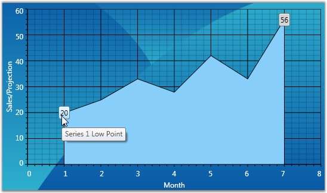

Annotations at specific X-Y coordinates can be added to the chart programmatically. The ChartSeriesAnnotation type used to define an annotation provides these properties:
Table 173: Property
|
ChartSeriesAnnotation Property |
Description |
|
Description |
String description of the annotation. |
|
X |
Specifies the x coordinate in the plot. |
|
Y |
Specifies the y coordinate in the plot. |
|
OffsetX |
X offset for locating the annotation. |
|
OffsetY |
Y offset for locating the annotation. |
|
Template |
Apecifies the look and feel of a specific annotation instance. |
The AnnotationsCollection type, which is the container for the above ChartSeriesAnnotation instances, provides some properties that will be applied on all the annotations:
Table 174: Property
|
AnnotationsCollection Property |
Description |
|
AnnotationsTemplate |
Specifies the look and feel for all the annotations in the ChartSeries. |
|
LineColor |
Specifies the color of the line drawn from the location to the annotation, in case OffsetX and OffsetY are specified. |
|
IsRelative |
Z and y values above are x-y coordinates of the plot If true, they are in Chart Area coordinates. Default value is false. |
Here is a code sample that adds a few annotations to a chart.
|
[XAML]
<sfchart:ChartSeries Name="series1" Label="Series1" Type="Area" Interior="LightSkyBlue"> <sfchart:ChartSeries.Annotations> <sfchart:AnnotationsCollection LineColor="White" x:Uid="Annot"> <!--Define the look and feel of the annotation.--> <sfchart:AnnotationsCollection.AnnotationsTemplate> <DataTemplate> <Button Content="{Binding Y}" ToolTip="{Binding Description}" Background="LightGray" Name="Button1" Click="Button_Click" /> </DataTemplate> </sfchart:AnnotationsCollection.AnnotationsTemplate> </sfchart:AnnotationsCollection> <!--The annotations are added to this collection in code-behind.--> </sfchart:ChartSeries.Annotations> </sfchart:ChartSeries> |
|
[C#]
// Series1 Annotations ChartSeriesAnnotation ser1LowPoint = new ChartSeriesAnnotation() { X = 1, Y = 20, Description = "Series 1 Low Point" }; ChartSeriesAnnotation ser1HighPoint = new ChartSeriesAnnotation() { X = 7, Y = 56, Description = "Series 1 High Point" };
this.Chart1.Areas[0].Series[0].Annotations.Items.Add(ser1LowPoint); this.Chart1.Areas[0].Series[0].Annotations.Items.Add(ser1HighPoint); |
The resultant annotations look like this.

Figure 262: Chart Series with Two Annotations
See Also